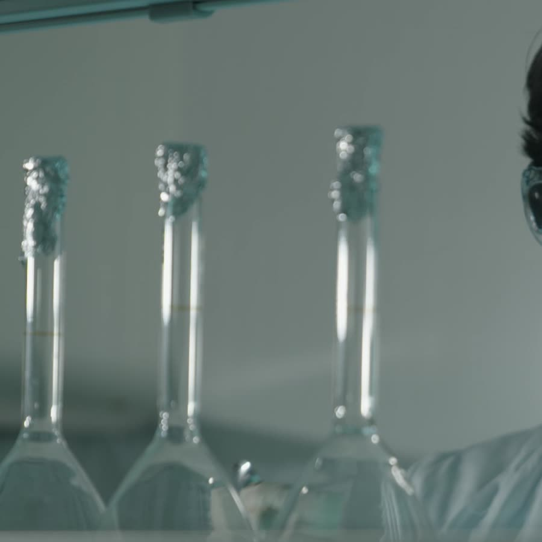
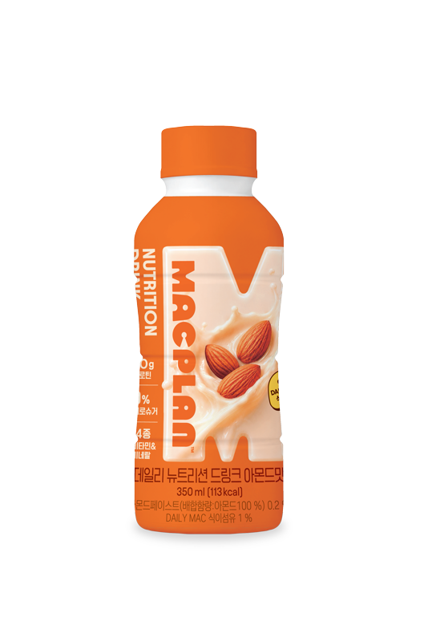

김치 유래 균주 CJLP133
- 확인한 것
- 국내 개발 유산균주 최초 식약처 개별인정형 (2013)
- 관련 제품
- 바이오코어 건강한 생유산균 500억
출처 · CJ웰케어 연구 성과
The K-Lifestyle Wellness Solution Provider
미생물의 세계에서, 사람의 하루로
스크롤하면 렌즈가 열립니다
김치에서 찾은 균주를 CJ웰케어가 검증하고, CJ바이오사이언스가 AI로 장 속 미생물을 읽습니다.
김치에서 분리한 유산균 · 약 3,500개

CJLP133
국내 개발 유산균주 최초 개별인정형 · 2013
인체적용시험 · 무작위 배정 · 이중맹검 · 위약대조

보이지 않는 것에서 시작해,
매일의 습관이 됩니다.
연구 논문 · 전임상부터 인체적용시험까지
19편
MAC 식이섬유 · 장내 미생물의 먹이

1.2M+
유전체 DB · CJ바이오사이언스
12,000+
보유한 실물 균주 · CJ바이오사이언스
DIGEST 장 모사 플랫폼 · 소화 과정을 체외에서 재현
Ez-Mx 플랫폼 · 한국인의 장 유형
3 → 6
AI 분석으로 세분화한 한국인 장 유형 · CJ바이오사이언스
시험관 속 균주 · 제품으로 완성
60년
CJ의 발효기술 · 그리고 20여 년의 R&D
마우스를 올리면 멈춥니다
연구 근거
출처 · CJ웰케어 연구 성과
출처 · CJ바이오사이언스 보도자료 (2026.06.26)
출처 · CJ바이오사이언스 보도자료 (2026.06.26)
Science Evidence
CJ바이오사이언스의 마이크로바이옴 기술과 CJ웰케어의 균주 연구가 어떤 제품으로 이어졌는지 따라가 보세요.
장내 미생물이 먹이로 쓰는 식이섬유

마이크로바이옴 기술력을 담은
MAC 식이섬유 한 병
영양과 미생물의 먹이까지
한 번에 채우는 식사
김치에서 찾은 균주 CJLP133약 3,500개 중 선별 · 인체적용시험

건강한 생유산균 500억
국내 개발 유산균주 최초
개별인정형 기능성 (2013)
AI로 세분화한
한국인 장 유형 6가지
한국인의 장에 맞춘
맞춤형 솔루션
나의 장과 생활에
꼭 맞는 하루